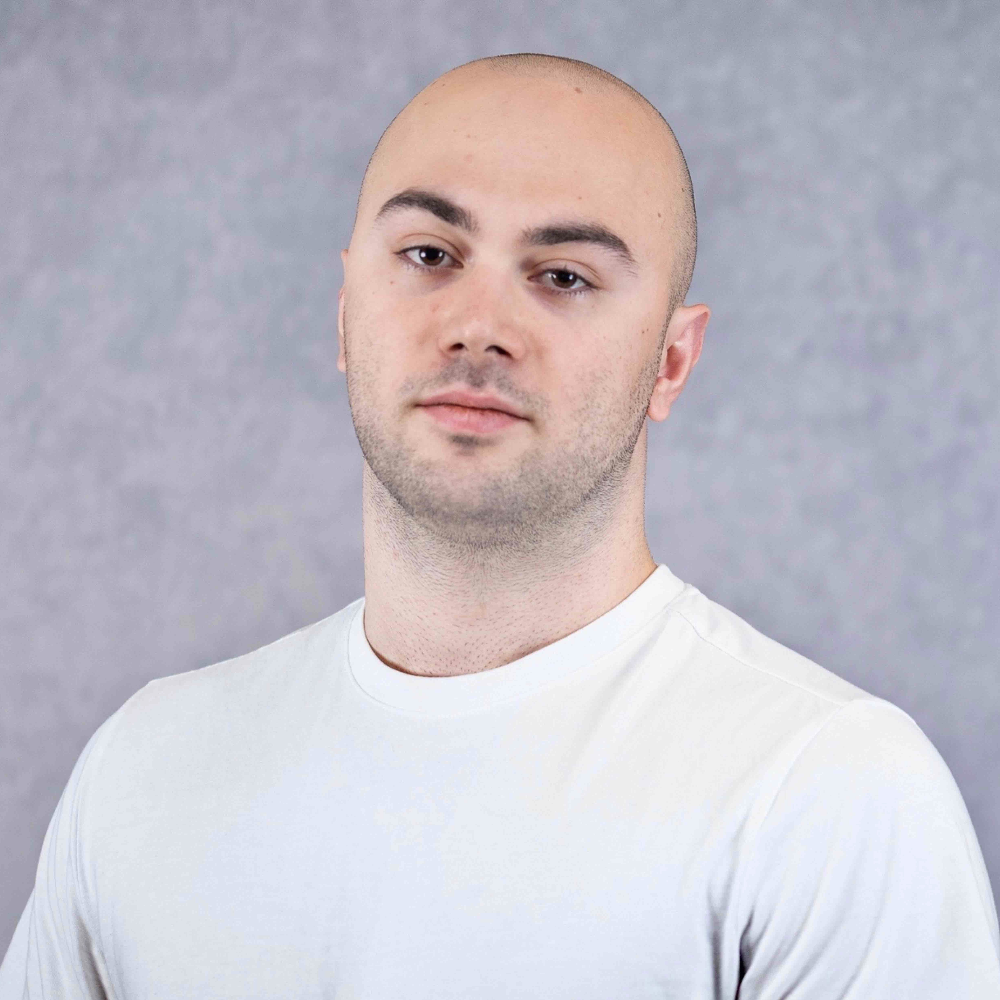
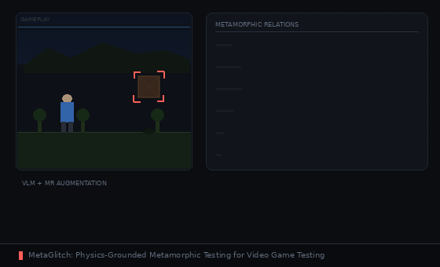

Giorgi Merabishvili
PhD student in Computer Science at North Carolina State University, advised by Marcelo d'Amorim. I work on software testing and improving the robustness of software systems. Previously, I earned my MS in Computer Engineering from NYU and worked with Andrea Stocco at TU Munich (DAAD scholar). This summer I will join the Max Planck Institute for Security and Privacy as a research intern with Marcel Böhme.

North Carolina State University
PhD in Computer Science
Coursework: Design and Analysis of Algorithms, Software Testing and Reliability

New York University
MS in Computer Engineering · GPA: 3.80
Coursework: Machine Learning, Deep Learning, ML for Cybersecurity, Probability and Stochastic Processes

St. Francis College
BS in Information Technology · GPA: 3.95 · Summa Cum Laude
Honors Thesis: "Robotics and Environmental Issues", NE Regional Honors Conference 2023

Max Planck Institute for Security and Privacy
Research Intern · Bochum, Germany
Advisor: Dr. Marcel Böhme
North Carolina State University
Research Assistant · Raleigh, NC
Advisor: Dr. Marcelo d'Amorim. Game testing: developed MR-guided VLM glitch detection for gameplay videos. WebAssembly runtime analysis: transplanting regression tests across runtimes and using them as seed corpora for fuzzing.

Technical University of Munich
Research Intern · Munich, Germany
Advisor: Dr. Andrea Stocco. Conducted research on automated testing for deep learning systems. Developed latent space interpolation methods for boundary testing and improved validity of generated test pairs.

RoboMaster NYU
Computer Vision Engineer · New York, NY
Worked on real-time object detection systems for tracking enemy robots. Trained and tested models on hardware provided by the mechanical team.


Left Behind, Not Forgotten: Reusing Regression Tests to Find Bugs in WebAssembly Runtimes
Under Submission, 2026
Introduces rtbench, a corpus of 584 WASM regression tests. Transplantation and fuzzing together reveal 38 new bugs across 3 runtimes—complementary techniques with zero overlap.


Targeted Deep Learning System Boundary Testing
ACM Transactions on Software Engineering and Methodology (TOSEM), 2025
Introduces Mimicry, a targeted boundary testing technique using disentangled StyleGAN latent spaces to find inputs near decision boundaries across 5 image classification datasets.